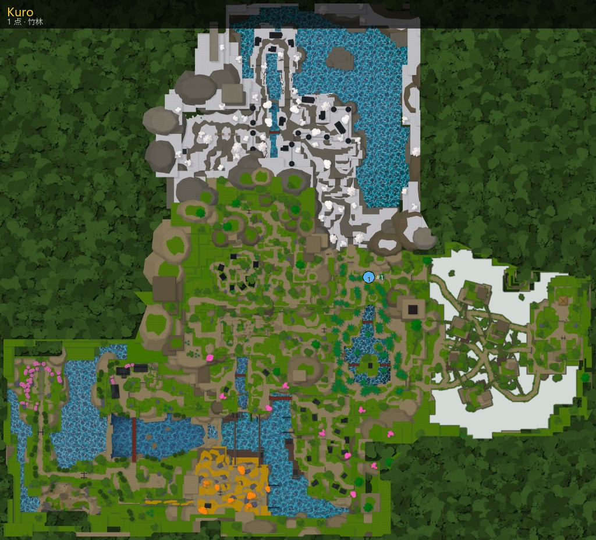

主页 / NPC / Kuro
Kuro
Kuro
商店
- 区域：竹林 (Bamboo Grove)
- 作用：商店
地点

坐标一览（1）
| # | 坐标 |
|---|
| 1 | 667.3, 1121.2, -1100.8 |
功能与用处
商店货架
对话摘录
Here's my , buy what you think you need.
› Buy the selection
› Farewell
Keep your coin close… we may meet again
Well now... not many travelers find me out here .